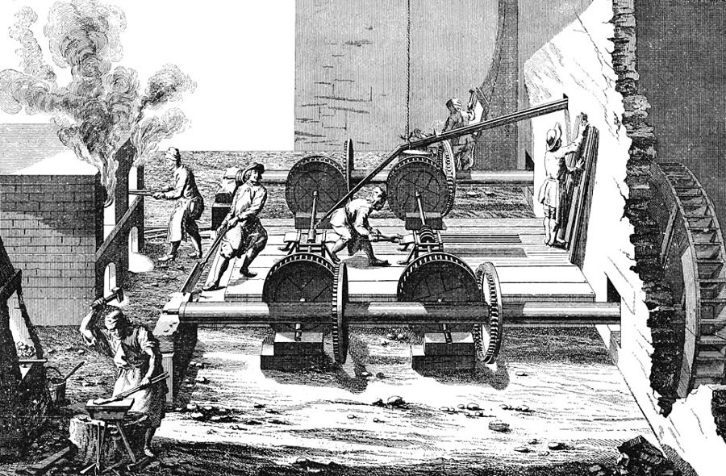
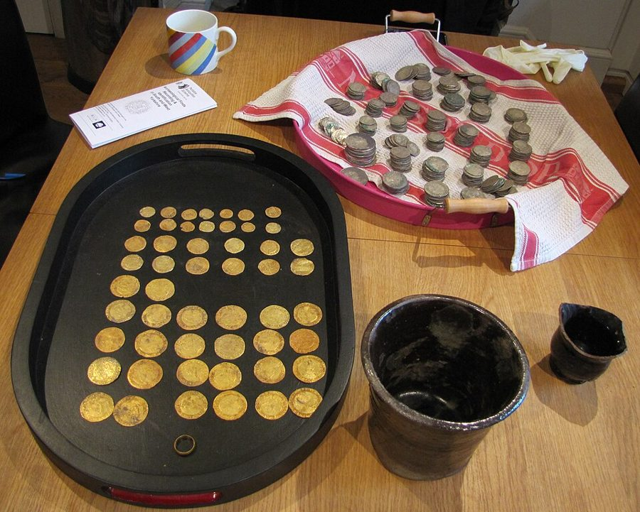

这一页在做什么
卷一讲分工让劳动更有效率。卷二一开头，斯密回头补上一个前提：分工的人要先有人替他攒下一笔东西，养活他，给他原料和工具。这一页先讲这座桥，再给「资本」分类：一个人、一个国家攒下的东西，哪些拿来吃用，哪些拿来赚钱；赚钱的里面，哪些留在手里就能赚，哪些要卖出去才赚。读的时候抓两条线：积累和分工谁先谁后；人学来的本事为什么也算资本。

他想证明什么
卷一第 1–3 章讲分工，这一页补上分工的前提：分了工的人，吃的穿的都得买别人的，可他得等自己的东西做完、卖掉才有钱买，所以在这之前，得有一笔事先攒下的东西（stock）养着他。斯密由此说，积累「按事物的本性」必须先于分工，攒得越多，活就能分得越细，雇主也越有本钱添置好机器。不过同一段末尾他自己补了半句：每一行的人数一般随分工增加，或者不如说，是人多了才分得这么细。引言最后一段是卷二的地图：第 1 章分类（本页），第 2 章钱和银行（页 11），第 3、4 章资本自己用和借给别人用（页 12、13），第 5 章资本的不同用途对一国的影响（页 13）。
读法：§1 先读，只有六段。第 1 章大半是分类清单，当术语表读就行：§2 的裁缝和农夫、§3 学来的本事、§5「不投资的人一定是疯了」都好看；§4 流动资本的四项清单可以跳过，只看第 26 段一句。
第 12 段说住宅「本身什么也生产不出来」，对整个社会不添一分收入，说得很干脆。今天各国算 GDP 的办法正好相反，连自己住的房子也要估一笔房租算进去，见「今天怎么看」。
斯密落在哪：分工要靠事先攒下的东西撑着；一国的积存分成三份：留着吃用的、留在手里生利的固定资本、换了主人才生利的流动资本，后两份唯一的目的是养活头一份；只要安全过得去，有见识的人都会把积存用起来。
分节地图
这一页是卷二引言和第 1 章，本站切成 5 节。粗体是本站起的节名；「杨译里找」后面是杨译里这一节开头附近的小标题或第一句；灰色的英文是原文这一节开头的几个词。标「先读」的是最短读法。
- 先有积蓄，才有分工在原始社会状态下不需要有资财IN that rude state of society …卷一接卷二的桥。打猎的人不必攒；织工要等布织完卖掉才有钱买饭，所以得有人先垫上。留意第 3 段末斯密自己改口。最后一段是卷二五章的地图。
- 裁缝的一包针，农夫的种子一个人很少想到从小量资财获取收入WHEN the stock which a man possesses …个人的积存怎么分：拿来吃用的和拿来生利的，生利的又分换主人和不换主人两种。裁缝的针、铁厂的炉子、农夫的耕牛和种子，例子比定义好记。
- 学到的本事也是资本社会总资财也同样分成三部分The general stock of any country …同样的分法用到整个国家。第 12 段说住宅对社会不添收入，今天的算法相反；第 17 段把人学来的本事算作固定资本，是「人力资本」的源头之一。
- 流动资本的四样东西社会总资本自然分成的三部分中…The Third and last of the …流动资本的四项清单，固定资本靠流动资本造出和维持，都是定义，可以跳过。只看第 26 段一句：两种资本唯一的目的，是养活留着吃用的那一份。
- 不投资的人一定是疯了在一切比较安全的国家…In all countries where there is …只有两段。安全过得去的地方，不把积存用起来的人「一定是疯了」；怕暴力的地方，人们把家当埋进地里。短，好玩，也是这一章今天最用得上的一段。
先用中文过一遍：这一页的概念
这一页用到的两个概念。讲的是概念本身；每块的「今天」说今天怎么看它。
§1资本（积存） stock
stock 在 18 世纪的英文里本义是「积存」：仓里的粮、柜里的衣服、铺子里的货、手里的钱、作坊里的工具，都算。斯密把一个人的积存分成两份：拿来过日子的，和指望它带来收入的，后一份才叫资本（capital）。只够吃几天几周的人，不会想拿它生利，只能靠干活过日子，斯密说各国大多数劳动穷人都是这样；够吃几个月几年，才会把大部分拿去生利。所以卷二的 stock 比今天说的「资本」宽，连没吃完的面包和家里的家具都在里面。译本：「资财」，杨译卷一把同一个词译作「资本」。
今天：今天会拆开说：企业的机器厂房叫资本存量，家里的汽车冰箱叫耐用消费品，钱和存款叫金融资产。stock 今天多指股票或存货，读卷二时别把这层意思带进去。
在这一页：引言第 1–3 段讲为什么要先攒；第 1 章第 1–2 段把个人的积存分成吃用和资本两份。
§2固定资本和流动资本 fixed capital; circulating capital
斯密按「赚钱时换不换主人」来分。流动资本要出手才赚：商人的货卖成钱，钱再买成货，绕一圈回来带着利润；付出去的工钱、买来的原料也是这样。固定资本留在主人手里就能赚：机器、作坊、改良过的田。同一样东西算哪种，看怎么用：耕牛是固定的，喂它的草料是流动的；买来养肥了卖的牛是流动的；为了剪毛、挤奶、下崽留着的羊群是固定的。种子在田和仓之间来回跑，却从不换主人，所以斯密算它固定资本。
今天：会计按「一年内能不能变现」分流动资产和非流动资产，种子、育肥的牛都会算进流动的一边，和斯密的分法不同。「流动资本」也不是今天说的「流动性」。
在这一页：§2 第 3–10 段讲个人；§3、§4 第 11–29 段把同样的分法用到整个国家。人学来的本事归固定资本，见页 07 的人力资本。
故事和背景
这一页里的故事和 18 世纪的东西，按在书里出现的顺序排。
§2一包针和一座铁厂
第 8–9 段排了一张「本钱有多重」的表。裁缝师傅的营业工具只有一包针；鞋匠的贵一些，斯密特意补一句「虽然只贵一点点」；织工的又比鞋匠贵得多。可这几种手艺人的本钱，大半还是像流水一样付出去的工钱和原料，等活卖出去，再连本带利流回来。到了大铁厂，熔矿炉、锻炉、切铁机，不花一大笔钱建不起来；煤矿和各种矿山抽水用的机器，常常还要更贵。今天说「轻资产」「重资产」，说的是同一件事：开一家裁缝铺几乎不用先砸钱买设备，开一座矿就得先砸。
§3出租化装舞会服装的人
第 12 段，斯密把住宅、衣服、家具都归进「留着自己吃用」的那一份。房子对住的人「无疑极其有用」，可就像衣服家具一样，是他的开销，不是他的收入。房子租出去，对房东是资本；可照斯密的说法，房子本身什么也生产不出来，房客的房租总得从工钱、利润或地租里出。他顺手举了一串出租生意：化装舞会流行的地方，有人按晚出租舞会服装；家具商按月、按年出租家具；殡葬承办人（undertakers）按天、按周出租丧礼用具。这些收入，归根到底都是从别的收入里转过来的。Cannan 在注里引了法国重农学派 Mercier de la Rivière 1767 年的同一说法。今天的算法正好反过来，见「今天怎么看」。
§5埋在地里的钱
第 31 段，斯密说，在人们时时怕上面的人施暴的国家，常有人把大半家当埋起来，一有风吹草动就带着跑。他说「据说」土耳其、印度斯坦是这样，「我相信」亚洲大多数政府治下也是；紧接着又说，封建时代暴力横行，「我们的祖先」似乎也这样。那时从地下挖出、谁也证明不了归属的财宝（treasure-trove），是欧洲最大的君主们一笔「不可小看」的收入：它归君主，不归挖到的人，也不归地主，除非地主的特许状里写明给了他。这条规矩在英格兰一直用到 1996 年，那年的《财宝法》（Treasure Act）取代了旧规矩，挖出的财宝仍归王室（或享有这项特权的领主），好让博物馆收购。

原典：斯密的原话
这本书是公版书，下面整段放斯密的原文，配本站的白话译。灰字说它在杨译的哪里，最后一行是这段里今天容易读错的 18 世纪词。
§1织工的一匹布
卷二的出发点，一个织工讲清「为什么要先攒」，末尾接上第 3 段最后一句斯密自己的改口。在杨译卷二引言劳动分工使资财成为必不可少那个小标题下面。
But when the division of labour has once been thoroughly introduced, the produce of a man’s own labour can supply but a very small part of his occasional wants. … But this purchase cannot be made till such time as the produce of his own labour has not only been completed, but sold. … A weaver cannot apply himself entirely to his peculiar business, unless there is beforehand stored up somewhere, either in his own possession or in that of some other person, a stock sufficient to maintain him, and to supply him with the materials and tools of his work, till he has not only completed but sold his web. This accumulation must, evidently, be previous to his applying his industry for so long a time to such a peculiar business. … But the number of workmen in every branch of business generally increases with the division of labour in that branch, or rather it is the increase of their number which enables them to class and subdivide themselves in this manner.
本站译：可是，分工一旦彻底推行开来，一个人亲手做出的东西，只能满足他随时冒出来的需要里很小的一部分。……而在他自己的产品不但做好、而且卖掉以前，他是买不成的。……一个织工要一心扑在织布这一行上，就得事先在某个地方，在他自己手里或者别人手里，存好一笔东西，够养活他，够给他原料和工具，一直撑到他把这匹布不但织完、而且卖掉。显然，这笔积累必须在他长期专干这一行之前就有了。……不过，每一行的工人，一般随这一行分工的推进而增多；或者不如说，是人数增多了，他们才能这样分门别类、越分越细。
留意「在他自己手里或者别人手里」：织工自己不必攒，包买商、东家、放债的人可以替他垫，下一页的银行干的就是这件事。最后一句斯密把因果倒了过来：不是先分工再添人，而是人多了才分得细。读的时候别把「积累先于分工」读成一条单向的铁律。
- web织机上织出的一匹布。译本：「鱼网」，织工就成了织渔网的人
- peculiar business自己专门的那一行，不是「古怪的生意」
- occasional wants随时冒出来的需要，不是「偶尔的需要」
§3学来的本事也是资本
把人学来的本事算作一国的固定资本，「人力资本」最常被引的源头之一，整段。在杨译第 1 章（d）有用才能的获得那个小标题附近。
Fourthly, of the acquired and useful abilities of all the inhabitants or members of the society. The acquisition of such talents, by the maintenance of the acquirer during his education, study, or apprenticeship, always costs a real expence, which is a capital fixed and realized, as it were, in his person. Those talents, as they make a part of his fortune, so do they likewise of that of the society to which he belongs. The improved dexterity of a workman may be considered in the same light as a machine or instrument of trade which facilitates and abridges labour, and which, though it costs a certain expence, repays that expence with a profit.
本站译：第四，社会全体居民或成员学来的、有用的本事。学这些本事，要在学的人受教育、钻研或当学徒的那些年里养活他，总要花一笔实实在在的费用；这笔费用就好比一份固定、凝结在他身上的资本。这些本事是他个人财产的一部分，同样也是他所属的那个社会的财产的一部分。一个工人越练越巧的手艺，可以和一台便利、节省劳动的机器或营业工具一样看待：它要花一笔费用，却能把这笔费用连本带利挣回来。
Cannan 在注里挑了一个前后不一：卷一第 10 章（页 07）斯密把熟练手艺多挣的那一截当工资，这里却当成资本的利润。斯密也只是打比方（as it were，「好比」），没说教育该怎么投，那要到卷五（页 25）。
- acquired后天学来的，和天生的才能相对
- realized体现、凝结在……上，不是「意识到」
- fortune财产、家当，不是「运气」
§5不投资的人一定是疯了
这一章最后两段，先是一句俏皮话，再转到不安全的国家。在杨译第 1 章末尾，「在一切比较安全的国家」开头的那一段和下一段。
In all countries where there is tolerable security, every man of common understanding will endeavour to employ whatever stock he can command, in procuring either present enjoyment or future profit. … A man must be perfectly crazy who, where there is tolerable security, does not employ all the stock which he commands, whether it be his own or borrowed of other people, in some one or other of those three ways. In those unfortunate countries, indeed, where men are continually afraid of the violence of their superiors, they frequently bury and conceal a great part of their stock, in order to have it always at hand to carry with them to some place of safety, in case of their being threatened with any of those disasters to which they consider themselves as at all times exposed. This is said to be a common practice in Turkey, in Indostan, and, I believe, in most other governments of Asia. It seems to have been a common practice among our ancestors during the violence of the feudal government.
本站译：在安全还过得去的国家，每个有普通见识的人，都会设法把他支配得了的积存用起来，要么换取眼前的享受，要么谋求将来的利润。……在安全过得去的地方，一个人要是不把他支配的全部积存，不管是自己的还是借来的，用在这三种用途的某一种上，那他一定是彻底疯了。当然，在那些不幸的国家，人们时时害怕上面的人施暴，常常把大部分积存埋起来、藏起来，好随时带着逃到安全的地方，以防他们觉得自己随时会碰上的那些灾祸。据说这在土耳其、在印度斯坦是常见的做法，我相信在亚洲其他大多数政府治下也是。在封建统治暴力横行的年代，我们的祖先似乎也常这样做。
「三种用途」就是上面那张图的三份：吃用、固定资本、流动资本。斯密对亚洲用的是「据说」「我相信」，材料是二手的，也带着当时欧洲人的成见；但他马上把自己的祖先也算进去，可见他说的是制度，不是哪里的人天生爱藏钱。
- tolerable security过得去的安全，不要求十全十美
- command支配得了、能动用，不是「命令」
- superiors上面的人：官吏、领主、有权有势的人
今天怎么看
这一章的主要说法和今天的判断。每条标签判的是那条论点，五种标签的意思：
- 成立今天的经济学和证据支持这句话。
- 部分成立大方向对，细节或适用范围要改。
- 过时说的是 18 世纪的世界，当时也许对，今天的制度和技术已经变了。
- 被推翻后来的经济学或证据说明它错了。
- 有争议经济学界至今没有定论，两边各有代表性的研究。
积累必须先于分工，攒得越多，活才能分得越细
织工要等布卖掉才有钱，得有人先垫上；分工越细，要预先备下的原料工具越多。斯密自己在第 3 段末改口：也许是人多了才分得细。今天看，「先攒」不必是干活的人自己攒，赊账、借贷、银行都能替他垫；Solow 1957 年算过，美国 1909–1949 年每工时产出翻了一番，约八分之一来自资本加多，其余主要来自技术进步。
§1 第 2–4 段房子本身什么也生产不出来，所以不给整个社会添收入
斯密把住宅和衣服、家具一样算作留着吃用的东西，房租只是从别的收入转过来。今天看，各国的国民账户把住房提供的居住服务算作产出，自己住的房子也要估一笔房租算进 GDP，见下面的卡。
§3 第 12 段人学来的本事，是一国的固定资本
学本事要花钱，学成了像一台机器，能把花费连本带利挣回来。今天看，这就是 1960 年代 Schultz、Becker 做成体系的人力资本理论，算教育回报就从这里出发（见页 07）。只是斯密只打了个比方，Cannan 还指出他在卷一把同一笔回报算作工资。
§3 第 17 段安全过得去，人就把积存用起来；怕暴力的地方，人把钱埋起来
第 30–31 段。今天看，有直接的证据：Besley 1995 年研究加纳，地权越有保障，农户越肯在地上投资；Johnson、McMillan 和 Woodruff 2002 年调查几个前共产主义国家的新企业，觉得产权没保障的老板，连自己赚的利润都不肯拿回去再投，哪怕借得到钱。
§5 第 30–31 段书里的说法：房子本身什么也生产不出来，所以不给整个社会添收入
- 书里
- 第 12 段。斯密承认住宅对住的人「无疑极其有用」，只是把它和衣服、家具一样，归进留着吃用的那一份：自己住，不算收入；租出去，房东拿到房租，可房客的房租总得从工钱、利润或地租里出，全体人民的收入「丝毫」不会因此增加。
- 当时
- Cannan 在注里引了法国重农学派的同一说法：Mercier de la Rivière 1767 年写过，房租对社会不是新创造的财富，只是钱换了手。
- 今天
- 联合国等机构定的国民账户体系（2008 SNA）把住宅算作固定资产，它每年提供的居住服务算进产出：租房的按实付的房租算，自己住的也按市面租金估一笔「虚拟房租」算进 GDP。理由是：不这样算，一批出租房卖给住户自住，GDP 就会凭空下降，可住的条件一点没变；租房多的国家和自有住房多的国家，也没法比。本站补一句：照斯密的推理，理发的工钱也是从顾客别的收入里出的，理发也就不算产出了，下一页（页 12）的「非生产性劳动」就卡在这里。核对于 2026-10。依据：澳大利亚统计局对国民账户生产边界的说明（引 2008 SNA）；Cannan 注（书内）。
- 另一边
- 这条线是人划的：自住房的服务算进 GDP，家里的汽车、家具、家务劳动却不算，这是统计上为了可比、可行定下的惯例。
本站的总体看法：§1 先读，它是卷一接卷二的桥，也预告了下一页的银行。第 1 章当术语表读：记住两种资本按换不换主人分，记住人学来的本事也算资本，再读第 30–31 段：有了过得去的安全，才谈得上投资。分类清单可以放心跳过。
精彩回顾
隔几周回来时看这里。想不起来，点节号回到那一节。
一句话：分工要靠事先攒下的东西撑着；攒下的东西按换不换主人，分成固定资本和流动资本。
布织完、卖掉以前，织工得靠别人替他攒下的口粮过活。斯密说积累先于分工，又改口说也许是人多了才分得细。
§1种子在田和仓之间来回跑，却从不换主人，所以斯密算它固定资本；买来养肥卖掉的牛，才是流动的。
§2安全过得去的地方，人人都会把积存用起来；怕暴力的地方，人们把钱埋进地里。
§5